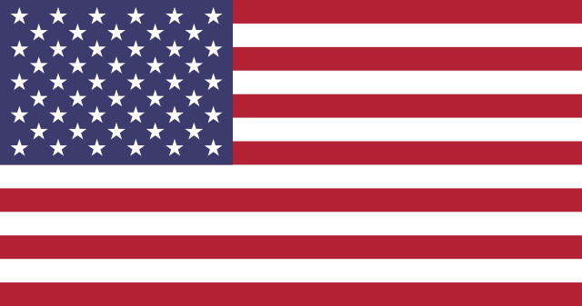

Fencing has been at the olympic games since the birth of the modern olympic games at the 1896 Summer Olympics in Athens. The world governing body of fencing is the Fédération Internationale d'Escrime or International Fencing Federation (FIE). The FIE establishes the rules to which international competitions must be organised and oversees their implementaion.
Fencing Olympic Medals
There are numerous countries that have won medals for fencing events in the olympics. The top 5 countries (as of 2020) are listed below. For the full list click here.
Rank
Nation
Gold
Silver
Bronze
Total
1
Italy (ITA)
49
46
35
130
2
France (FRA)
44
43
36
123
3
Hungary (HUN)
38
24
28
90
4
Soviet Union (URS)
18
15
16
49
5
Russia (RUS)
13
5
8
26
Fencing Olympic Medalists
The latest summer olympic games was the 2020 Tokyo Summer Olympics. However due to the COVID-19 pandemic, it was rescheduled to 2021. All three weapons, Épée, Sabre, and Foil were contested at a team and individual level for both men and women's fencing. The medalists for the 2020 Toyko Olympic games are shown below.
Men's Medalists
Event
Gold
Silver
Bronze
Individual Épée
France Romain Connone
Hungary Gergely Sikósi
Ukraine Ihor Reizlin
Team Épee
Japan Koki Kano Kazuyasu Minobe Masaru Minobe Satoru Uyama
ROC Sergey Bida Sergey Khodos Pavel Sukhov Nikita Glazkov
South Korea Park Sang-young Ma Se-geon Song Jae-ho Kweon Young-jun
Individual Foil
Hong Kong Cheung Ka-long
Italy Daniele Garozzo
Czech Republic Alexander Choupenitch
Team Foil
France Enzo Lefort Erwann Le Péchoux Julein Mertine Maxime Pauty
ROC Anton Borodachev Kilill Borodachev Vladislav Mylnikov Timur Safin
United States Race Imboden Nick Itkin Alexander Massialas Gerek Meinhardt
Individual Sabre
Hungary Áron Szilági
Italy Luigi Samele
South Korea Kim Jung-hwan
Team Sabre
South Korea Oh Sang-uk Kim Jun-ho Kim Jung-hwan Gu Bon-gil
Italy Luca Curatoli Luigi Samlele Enrico Berrè Aldo Montano
Hungary Áron Szilági András Szatmári Tamás Desci Csanád Gémesi
Women's Medalists
Event
Gold
Silver
Bronze
Individual Épée
China Sun Yiwen
Romania Ana Maria Popescu
Estonia Katrina Lehis
Team Épee
Estonia Julia Beljajeva Irina Embrich Erika Kirpu Katrina Lehis
South Korea Choi In-jeong Kang Young-mi Lee Hye-in Song Se-ra
Italy Rossella Fiamingo Federica Isola Mara Navarria Alberta Santuccio
Individual Foil
United States Lee Kiefer
ROC Inna Deriglazova
ROC Larisa Korobeynikova
Team Foil
ROC Inna Deriglazova Larisa Korobeynikova Marta Martyanova Adelina Zagidullina
France Anita Blaze Astrid Guyart Pauline Ranvier Ysaora Thibus
Italy Martina Batini Erica Cipressa Ariana Errigo Alice Volpi
Individual Sabre
ROC Sofia Pozdniakova
ROC Sofya Velikaya
France Manon Brunet
Team Sabre
ROC Olga Nikitina Sofia Pozdniakova Sofya Velikaya
France Sara Balzar Cécilia Berder Manon Brunet Charlotte Lembach
South Korea Yoon Ji-su Seo Ji-yeon Choi Soo-yeon Kim Ji-yeon
Women's Foil Gold Medal Bout
Watch the highlights of the bout between Lee Keifer of the USA and Inna Deriglazova of the ROC in the gold medal bout of the Women's Individual Foil Fencing event at the Tokyo 2021 Olympic Games
Deriglazova (age 31) is the reigning Olympic Champion from the Rio Olympics; has been World Number 1 for every season since the season of 2016-17; was World Champion in 2015, 2017, and 2019; and has won almost everything during this Olympic cycle.
Kiefer (age 27) is a very prominent fencer also. She has been ranked in the top 5 since the season of 2014-15, and was a member of the USA team that won the World Championships in the Women Team Foil Event in 2018. However, Kiefer has no previous Olympic medals and only one individual World Championships medal.

 Italy (ITA)
Italy (ITA) China
China Estonia
Estonia